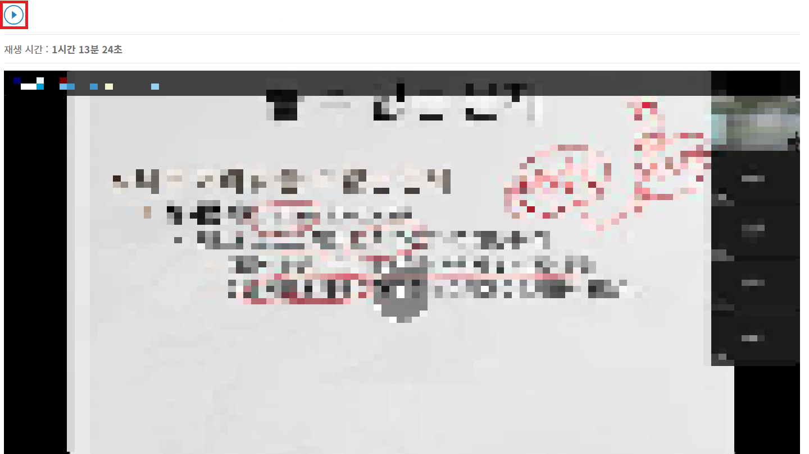
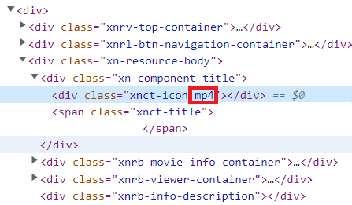
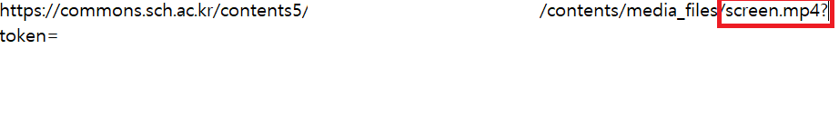

-
1. 아이콘 우클릭 후 검사
사진과 같은 창에서 빨간 네모 안의 아이콘을 우클릭 후 검사를 클릭합니다.
-
2. 아이콘 이름 알아내기
왼쪽 혹은 아래에 나타나는 코드창에서 파란색 배경이 뜬 줄 xnct-icon (혹은 다른 값일 수도 있습니다.) 옆 mp4, screenLecture 등의 값을 적어둡니다. 우측 사진의 mp4는 예시의 값으로 다를 수 있습니다.
-
3. 새로고침 (F5) 후 영상 실행

해당 페이지를 새로고침하여 (F5키 누름) 영상을 실행합니다. 인트로가 있으면 인트로를 보고 수업 영상이 시작되면 일시정지 합니다. 그 후 F12키를 누른 후 영상을 우클릭하고 검사를 클릭합니다. 그러면 좌측 사진과 같은 코드가 나오는데 div class="vc-vplay-container" 부분의 좌측 아래 화살표를 클릭하여 사진과 같이 video class=... 가 보이도록 합니다. 그러고 빨간색 박스로 된 부분 (src="" 우측 부분)의 링크를 우클릭 후 open in new tab을 클릭합니다.
-
4. 링크 알아내기
링크를 살폈을 때 우측 사진과 같은 데, /contents/media_files/ 옆 ㅁㅁㅁ.mp4 부분을 적어둡니다.
(medial_files 부분도 다를 경우 같이 적어둡니다.) -
5. 정보 전송
적어두었던 아이콘 이름, 링크 이름을 이메일 혹은 카카오톡 으로 보내주시면 신속하게 해결해드리겠습니다!